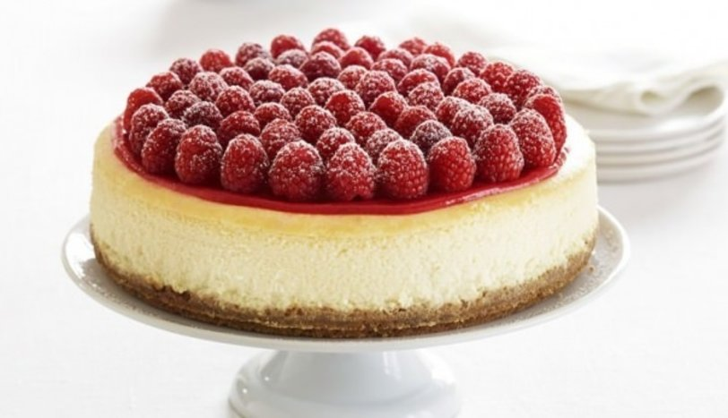

Frambuazlı Cheesecake Tarifi
İçinizi baymayacak, lezzeti ile damaklarınızda iz bırakacak Frambuazlı Cheesecake de tatlı tarifleriniz arasında vazgeçilmezlerden olacak.

Frambuazlı Cheesecake İçin Malzemeler;
- 500 gr labne peyniri
- 200 ml krema
- 1,5 su bardağı toz şeker
- 5 yemek kaşığı un
- 4 adet yumurta
- 1 paket vanilya
Alt tabanı için;
- 2 paket yulaflı bisküvi (262 gr)
- 100 gr eritilmiş tereyağı
- 1 su bardağı fındık
- Yarım çay bardağından biraz az süt (50 ml)
Alt tabanı için;
- 250 gr frambuaz
- 5 yemek kaşığı şeker
- 2 yemek kaşığı mısır nişastası
- 1 çay bardağı su (125 ml - nişastayı eritmek için)
- 1 su bardağı su (200 ml)
- 1 paket vanilya
Frambuazlı Cheesecake Nasıl Yapılır?
- Frambuazlı cheesecake’in alt tabanı için öncelikle yulaflı bisküvi ve fındığı rondoya alarak kum gibi olana kadar rondoyu çalıştıralım.
- Hazırladığımız bisküviyi uygun bir kaba aktaralım. Üzerine süt ve eritilmiş tereyağını ekleyerek tüm malzemeleri güzelce karıştıralım.
- Kelepçeli kalıbımızın tabanına pişirme kağıdını yerleştirelim. Hazırladığımız bisküvili harcı kalıba boşaltalım ve kaşıkla bastırarak sıkıştıralım. Kremamızı hazırlayana
kadar tatlımızın tabanını buzdolabında dinlenmeye bırakalım.
- Kreması için uygun bir kasede sıvı kremayı mikserle çırpalım.
- Labne peynirini de ayrı bir kap içerisinde çırptıktan sonra kremayı üzerine ilave edelim.
- Üzerine şekeri de ekleyelim ve şeker eriyene kadar güzelce çırpalım.
- Kremamızı çırparken bir yandan da yumurtalarımızı teker teker ekleyelim.
- Yumurtaları ekledikten sonra karışımımıza son olarak un ve vanilyayı ilave edip tekrar çırpalım.
- Buzdolabında beklettiğimiz kelepçeli kalıbı alarak kalıbın etrafını alüminyum folyo ile saralım.
- İçerisine hazırladığımız kremayı boşaltalım ve önceden ısıttığımız 160 °C fırında alt üst fansız ayarda 1 saat pişmeye bırakalım. Bu aşamada fırının içerisine ısıya dayanıklı
bir kap içerisinde su koyarak cheesecake’in çatlamasını engelleyelim.
- Sürenin sonunda fırının kapağını açalım. Hafifçe sallayarak pişip pişmediğini kontrol edelim. Salladığımızda çok fazla oynamıyorsa fırını kapatalım. Kapağını aralık bırakarak
1 saat kadar oda ısısına gelmesi için dinlenmeye bırakalım.
- Cheesecake’imizin frambuazlı sosu için sos tenceresine frambuaz, toz şeker ve suyu alarak karıştıralım.
- Diğer taraftan soğuk suyun içerisinde mısır nişastasını çözdürelim ve sosumuza ilave edelim. Kaynayıncaya kadar sürekli karıştırarak frambuaz sosunu pişirelim.
- Sos kaynamaya başladıktan sonra ekleyelim ve tekrardan karıştıralım.
- Yaklaşık 1 saat kadar dinlendirdikten sonra cheesecake’i fırından alaralım. Üzerine sosumuzu gezdirelim.
- Hazır olan frambuazlı cheesecake’imizi dilediğimiz şekilde süsleyerek servis edelim.
Afiyet olsun!